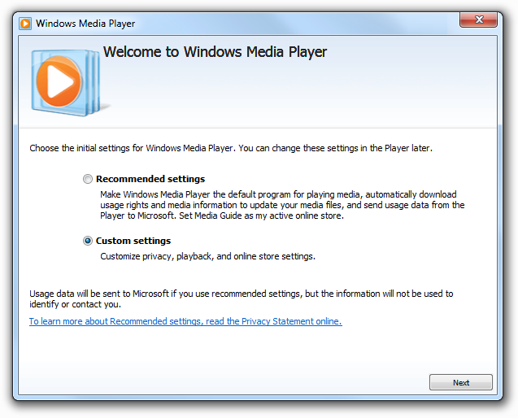
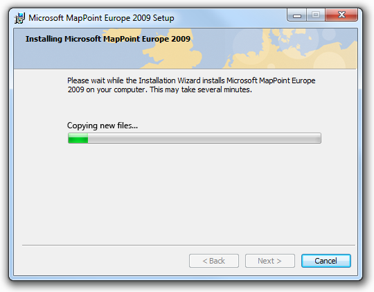
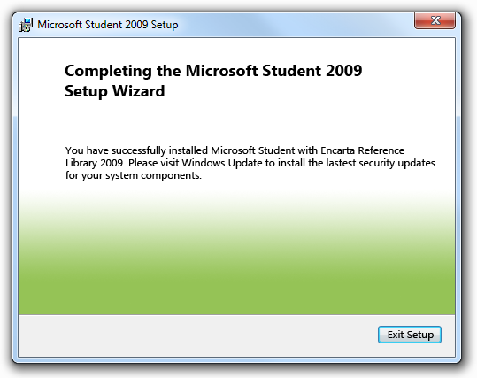
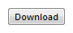
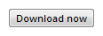

[!NOTE] This design guide was created for Windows 7 and has not been updated for newer versions of Windows. Much of the guidance still applies in principle, but the presentation and examples do not reflect our current design guidance.
Users don't enjoy installing software, so modern setup experiences need to be simple, efficient, and problem-free.
Setup usually refers to the experience of installing and initially configuring a program. However, setup can also refer to entire installation life cycle, including initial installation, incremental program updates (such as version upgrades or service packs), repairing, and uninstalling.
Most users regard setup as a necessary evil, to be performed as quickly as possible. The point of installing the program is to use it, not to make innumerable decisions about configuration and usage, or, worse yet, to spend a lot of time answering personal questions used for registration or marketing purposes.
A streamlined setup experience.
The setup experience combined with the first use of the program is known as the first experience. Your program should provide a streamlined first experience for users. Each question or step that isn't necessary or could be postponed delays them from using your program. Overly complex setup programs are relics from a different age.
Note: Guidelines related to the first experience using a program and wizards are presented in separate articles.
While all Microsoft Windows programs need some sort of setup program, you have a choice of where to put program settings:
Setup
Present settings in setup if:
First use of the program
Present settings on the program's first use if:
For such settings, users are likely to make better choices within the context of the program than within setup.
Centralized program options
Present settings on the program's options dialog box if all of the following conditions apply:
In the context of using the feature
Present settings in the relevant context if all of the following conditions apply:
Through careful attention to the placement of configuration settings, you can reduce the burden on users during their first experience with your program.
Welcome, next, next, next, next, next, install, finish, congratulations! Does this setup experience sound familiar? Historically, setup programs have adopted this kind of inefficient design: a long sequence of screens, inviting users into a mindless sequence of clicks just to get through it.
If users describe the setup of your program with words like quick and simple, they are surely praising the experience. They would much rather be using your program than setting it up.
Review your setup design for nonessential questions, options, pages, and paths, and be ruthless about eliminating them. Perform user research to find out what options users really need, and make sure they aren't mindlessly clicking the Next button through all the pages. Defer any options or questions that are better addressed in the context of the running program.
Many setup programs offer standard pages not because they are necessary or helpful, but because they are standard. For example, welcome pages, summary pages, and congratulations pages often just add clicks. Instead, your setup program should add pages only if they are necessary to complete the setup task. For guidelines about types of setup pages and how to evaluate them, see Page types later in this article.
In this example, the setup program eliminates the traditional Welcome page and gets right down to business.
While it might be necessary to offer different branches of setup (a speedy, typical experience and a more controllable, custom experience), make sure that you have enough custom options to warrant the extra complexity. Don't add branches unless you have to. A few unimportant options in a custom branch suggests the need to reorganize the setup design.
Another reason to streamline setup is that inexperienced users sometimes overanalyze options, fearing that a wrong choice could be irreversible or destructive. Forcing users to make decisions about things they don't understand or care about can make them feel anxious, incompetent, and even frustrated. Not a good first impression. It is better just to get them going quickly, feeling comfortable and confident as they explore the features in your program, and making better decisions about feature options at that time. For more guidelines, see Streamlining setup later in this article.
Strive to make your setup experience as simple as possible, but not simpler. Programs targeted at highly technical users may need a complex setup. For example, the Microsoft SQL Server team discovered that database administrators prefer to retain control over many setup options, such as file locations. Moreover, SQL Server is a large business application, with a number of components that differ widely in purpose and functionality. So while we want to keep things simple, setup needs to reflect the complexity of the product and the expectations and needs of its users.
Still, such complex setup programs should be the exception, not the rule. Most Windows programs should strive to start the setup process with a simple, single step.
Well-designed setup programs let users perform other activities during the time-consuming task of downloading and copying files. To run unattended, setup programs are designed to have four separate phases:
Because the installation phase might take a long time, this phase should be designed to run to completion without any user involvement. This means that all questions should be asked during the decision phase, and any problems that arise should be queued and dealt with in the completion phase. If the installation phase takes more than one minute to complete, assume that users will be doing something else during the download and installation phases.
Incorrect:

In this example, the setup program interrupts progress to ask a question that should have been asked during the decision phase.
If users patiently wait through the installation phase of the setup experience, perhaps watching a progress bar to its apparent completion, only to witness the progress bar reset and start over, there's a real sense of betrayal. The reported progress was misleading and ultimately meaningless.
A variation on this painful scenario is the "brinksmanship" installation: users see progress reach, say, 99 percent complete, yet are forced to wait for a disproportionate amount of time before finally getting to 100 percent complete. So in terms of what is most important to the user, an implied promise about the amount of time to wait, the claim of 99 percent complete is deceptive.
During the downloading and installation phases, users typically have two things they want to know: should they wait or do something else, and is the setup going to be done soon. While there are enough variables in the setup process to prevent you from providing perfectly accurate progress information, the progress feedback needs to be accurate enough to answer these two questions and set appropriate expectations. In addition to a progress bar, you can include a brief statement about the overall time expected for the process.
In this example, the progress page includes a brief, general statement about how much time the installation could take.
Good setup programs use progress bars effectively to provide users with helpful information about the setup program's progress. For more guidelines, see Progress Bars.
Modern setup programs must be designed to handle a variety of installation scenarios:
Given these scenarios, you shouldn't assume that users are always installing the program for themselves (making options about personal preferences inappropriate), going to be monitoring the process closely (making unattended setup important), or even want a graphical user interface for the task.
To complete the software setup lifecycle, users need to be able to remove software they don't want or no longer need. This is especially important if they didn't install the program themselves (for example, if it came pre-loaded on the computer).
Installing your program is the one task that all your users must complete successfully. If users fail to install your program, either you need to provide them with costly technical support or they aren't your users anymore.
Design your setup program to provide your technical support team with the features and information they need to help users install successfully. These details shouldn't normally be exposed to users, but they should be readily accessible when needed.
Incorrect:
In this example, the progress bar is showing details meaningful only to technical support.
Keep the normal user experience simple—don't clutter it with information that has value only to technical support. Rather, record support information in a setup log file instead. And more importantly, help users avoid the need for technical support with clear, concise error messages that explain problems well and provide practical solutions. Provide links to Help articles when necessary. Consider providing a Repair option to your setup program to repair missing or corrupted files or settings.
If you do only three things...
For more guidelines, see User Account Control.
Use a single restart. Delay the restart required by any prerequisites until the program and its updates are completely installed.
Let users determine when it happens. Don't restart Windows automatically, because users may lose work. Make sure that it's clear to users that they have a choice.
Incorrect:

In this example, users don't appear to have a choice about when to restart Windows.
If the user chooses to not restart Windows immediately, present any final feedback as a success, not a failure. While technically the installation isn't complete until restart, it was successful from the user's point of view.
Whenever practical, start the installation process with a single step. For example, instead of adding a separate page in setup for the license terms, you may provide a link to them instead. If you link to the terms:
Eliminate unnecessary options and questions.
Postpone options that are more appropriate for the first use of the program or feature.

In this example, Windows Media Player presents per-user privacy options on first use of the program.
Don't ask users questions about the system state. Detect this information automatically instead, and ask users to verify only if there is a reason to change.
Don't ask questions about unimportant details. For example, for typical Windows programs it is safe to assume that you should copy program files to the Program Files folder.
Incorrect:

In this example, setup should be streamlined by eliminating the request for file location input. Given the program's size, most users don't care, and simply click Next.
Don't ask permission to do what you shouldn't do anyway. For example, most programs shouldn't include an option to put the program icon on the desktop.
Don't confirm setup cancellation. If users click Cancel during setup, assume the cancellation was intentional and close the program without confirmation. If doing so risks losing significant time or effort, allow users to restart your setup program and pick up where they left off.
Optimize for unattended installation.
Eliminate unnecessary pages. If most users always just click Next on a page, consider getting rid of the page. For guidelines about eliminating certain types of pages, see Page types.
Eliminate unnecessary text.
Eliminate unnecessary effort.
Provide good default values:
Generally, select the most secure and private response to be the default.
If safety and privacy aren't factors, select the most likely or convenient response.
In this example, the user name and organization provided by default are obtained from the registry.
If an option is strongly recommended, consider selecting it by default, or adding "(recommended)" to its label.
Advance pages automatically when a page has no input and the task is done successfully, such as with download, installation, progress, and updates pages. Once the step is done, stay on these pages only to show problems.
When practical, start the program automatically when setup is done, instead of showing a Congratulations or Completion page. When setup is run interactively, assume the user is installing your program in order to run it immediately, so running the program is the best feedback to show that setup is complete. Automatically running the program isn't practical when the setup installs more than one program (for example, a suite consisting of many programs), when setup isn't run interactively, or when the installation process isn't complete after setup.
Welcome and Getting Started pages
Eliminate Welcome pages. While it's great to feel welcome, users typically just click Next without reading. And because users typically skip over these pages without reading, the text does little more than state the obvious, by design.
Incorrect:

In this example, there's nothing for the user to do but click Next.
Use a Getting Started page only if you must inform users about prerequisites for installing. Such prerequisites include installing required software or hardware, performing required system configuration changes and updates, performing a system backup to protect against data loss, or obtaining required information that the user isn't likely to have already.
Whenever practical, provide the ability to perform the prerequisites directly from the setup program. Users should have to perform the steps manually only if there isn't an alternative.
If a Welcome page or Getting Started page isn't used, include the program name and description on whatever is the first page of the Setup program. You can use welcoming language as introductory text as long as the page's purpose is clear.
License terms pages
Write the license terms using clear, concise text. Use plain language. Avoid "legalese."
Present using a format that is easy to read and scan. Don't use long passages of uppercase text.
Incorrect:
In this example, the uppercase text and large font size makes the terms difficult to read, forcing users to scroll more than necessary.
Require explicit consent to accept the license terms. License acceptance should never be selected by default. If radio buttons are used to indicate acceptance, leave the options cleared by default and require users to accept the terms before enabling the Next button.
In this example, the Next button is disabled until users have explicitly accepted the license terms.
Don't require users to scroll to the bottom of the license terms text before the Next button is enabled. This imposes an unnecessary burden on users to understand why the Next button is disabled.
Provide a Print command, either with a command button or a context menu. Present the terms in a format optimized for printing.
Product registration pages
Scope pages (typical, custom, or minimum)
Prefer to eliminate this page. Assume that most users want the typical setup experience (and design that experience so that it works well for most users).
If you must include a scope page:
If you must use a custom installation option, consider using relative button sizing and placement to guide most users to the typical installation.
In this example, the page design visually reinforces the fact that most users should opt for the typical installation.
Input pages

Start installation pages
Progress pages
Always provide a progress page, even if the program installs quickly. Provide a separate progress page for the downloading phase if there is one. Disable the Back (or Previous) and Next buttons while the setup is in progress, but leave the Cancel button enabled and responsive.

A typical progress page.
Use a single, determinate progress bar. Follow the determinate progress bar guidelines, including:
Provide a concise description of the current step above the progress bar. For quick installations, such text is unnecessary; the progress bar alone is sufficient. For installations requiring a minute or longer, text can be helpful for users attending the setup.
Use sentence fragments, typically beginning with a verb, and ending with an ellipsis. Examples: Copying files..., Installing required components....
Place text above the bar, not below.
Incorrect:

In this example, the explanatory text should appear above the progress bar.
Refrain from cluttering the progress page with unnecessary details. This page isn't for technical support, so there's no need to display registering GUIDs or specific files copied.
Incorrect:

In this example, technical details such as GUIDs are meaningless to users.
Error pages
If setup fails with a significant problem, display an error page that explains the problems along with practical steps to resolve them. Display the page with an error icon. Don't use a dialog box for this purpose.
In this example, the setup failure is explained on an error page, along with some steps to resolve the problem.
If setup completes with a minor recoverable problem, present the problem as an additional task instead of an error. Use positive, success-oriented, encouraging language, not terms like error, failure, or problem. Don't use an error icon.
Congratulations/Completion pages
When installing a single program interactively, start the program (and close the setup wizard) to indicate successful setup, instead of displaying a completion page. Exceptions:
If the setup has follow-up steps after installation, list them on a Completion page. But to justify a Completion page, make sure users are likely to perform the steps, and that the steps genuinely need to be stated (that is, they are not obvious).
Incorrect:

In this example, an unnecessary Completion page states the obvious. Windows Update runs automatically, so there's no reason for users to run it manually.
When installing a suite of programs, display a Completion page to indicate success and any follow-up steps that may be necessary.

In this example, setup has installed multiple programs, so it doesn't make sense to start one particular program automatically. A Completion page is more appropriate.
Incorrect:
Restrict installation on a per-user basis.
Correct:
Install only for me.

In this example, clicking the command button goes to a window or page that allows users to download.

In this example, clicking the command button performs the download immediately.
Only one command in a task flow should be labeled with now. So, for example, a Download now command should never be followed by another Download now command.
For more guidelines, see Style and Tone.
Â
Â